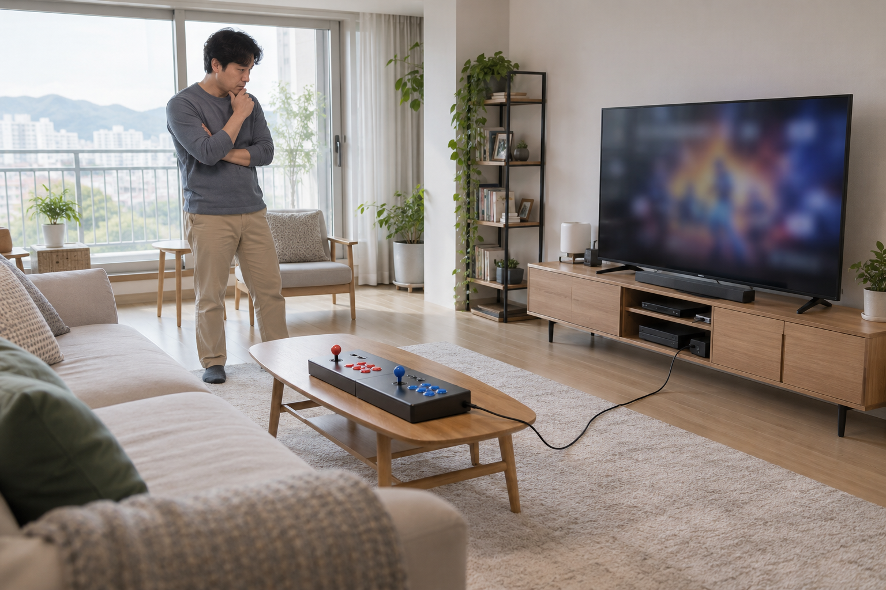
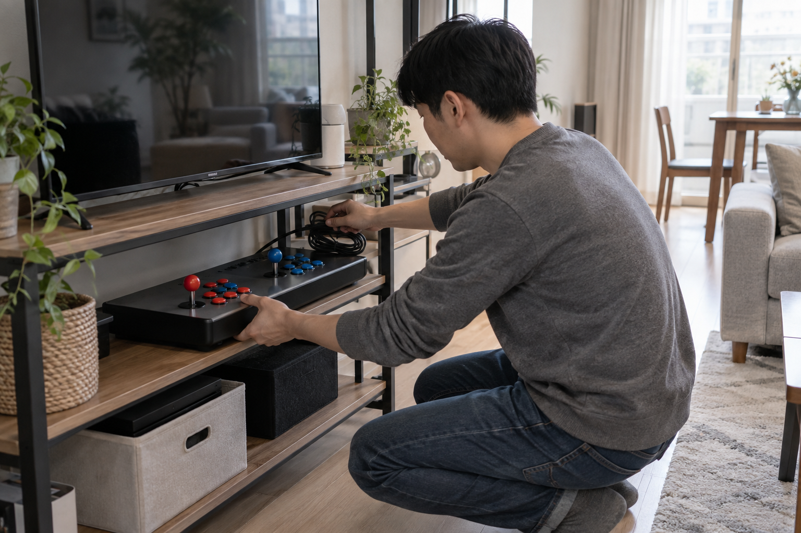

TV 연결형 오락기는 TV의 입력 단자만 맞는다고 바로 고르기보다 화면을 볼 자리, 조작부를 놓을 면, 전원·화면 연결선이 지나는 길과 사용 뒤 보관 공간을 함께 확인해야 합니다. 거실처럼 여러 사람이 쓰는 공간이라면 설치할 때와 치워 둘 때의 모습을 모두 그려 본 뒤 제품 형태를 비교하세요.

TV와 앉을 자리를 먼저 정하세요
TV에서 어느 정도 떨어져 앉거나 설지, 화면을 정면으로 볼 수 있는지부터 확인하세요. TV의 입력 단자와 제품이 요구하는 연결 방식을 판매 페이지에서 대조하고, 화면과 조작부 사이에 사람이 편하게 자리 잡을 공간이 있는지도 살펴보세요.
TV 연결형 오락기는 화면 크기보다 화면·자리·조작부의 배치를 먼저 정해야 합니다.
설치 순서가 궁금하다면 TV 연결형 오락기 설치 방법을 함께 확인하세요.
조작부를 놓을 면과 두 사람 자리를 확인하세요
조작부를 테이블이나 거치대에 둘 계획이라면 흔들리지 않고 수평을 유지하는지 확인하세요. 두 사람이 함께 쓸 때는 조이스틱과 버튼의 수만 보지 말고 서로 팔과 어깨를 움직일 자리가 있는지 실제 위치에서 살펴보는 것이 좋습니다.
조작부를 둘 면은 흔들리지 않고 두 사람이 팔을 움직일 여유가 있어야 합니다.
- 조작부가 놓일 면의 폭과 깊이
- 앉거나 서서 조작할 때의 높이
- 두 사람이 나란히 움직일 공간
- 사용 중 밀리거나 흔들리지 않는지 여부
2인 사용 기준은 가정용 오락기는 두 사람이 함께 할 수 있나요?에서도 볼 수 있습니다.
전원과 화면 연결선의 길을 살펴보세요
콘센트와 TV 입력 단자의 위치를 확인하고, 연결선이 방문이나 거실 통로를 가로지르지 않는지 살펴보세요. 선을 팽팽하게 당기거나 가구 모서리에서 심하게 꺾지 않도록 화면과 조작부의 위치를 함께 조정해야 합니다.
전원과 화면 연결선은 사람이 지나는 길을 피하고 꺾이지 않게 배치해야 합니다.

보관할 자리까지 함께 확인하세요
노리박스 공개 제품 목록에는 ‘레볼루션 RV팩 128G 7078게임 TV연결형 분리기통 오락실게임기’와 ‘국산 TV연결형 레트로 가정용 오락실게임기’가 안내되어 있어, 같은 TV 연결형 범주에서도 현재 판매 페이지의 구성과 크기를 각각 확인할 필요가 있습니다. 사용 뒤 조작부와 케이블을 어디에 둘지 정하고, 선반이나 수납장의 실제 안쪽 크기도 재어 보세요.
사용 뒤 보관할 자리까지 정해야 거실과 공용 공간을 계속 편하게 쓸 수 있습니다.
현재 제품 구성은 TV 연결형 제품 보기와 제품자세히보기에서 확인하고, 설치 환경을 정리한 뒤 연락하기에서 상담하세요.